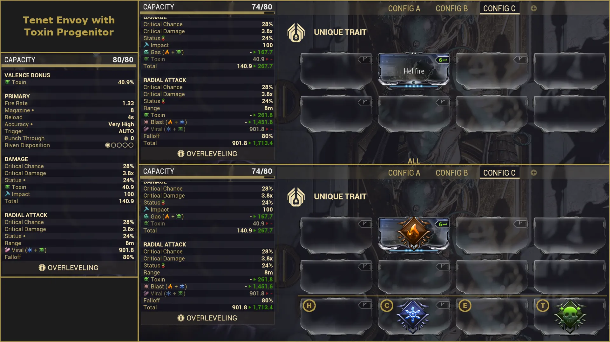

Modding: Advanced Concepts
Table of Contents
Overview
This page covers more technical and math heavy concepts in Warframe's modding system. These concepts are less relevant early on, but they become increasingly important as you push into Steel Path and start optimizing builds. For simplicity, none of the math here requires anything beyond basic algebra. The goal is to give you the tools to evaluate your own builds or at least understand what people are talking when you look at their build guides.
Note: This info is not geared towards new players
Additive vs Multiplicative Scaling
In Warframe, stats from different mods can interact in two ways. They either scale additively or multiplicatively with each other, and understanding the difference is an important concept when you're trying to optimize your damage.
Note: Mods can scale both additively and multiplicatively based on what you're comparing. For example, Serration (165% Damage) is additive to other mods but multiplicative to Elemental mods like Hellfire.
Additive scaling means mod stats are summed together before being applied. This generally happens when two mods affect the same stat. For example, Serration and Heavy Caliber both add base damage (% Damage) so they're additive to each other.
Serration (+165%) + Heavy Caliber (+165%) = +330% Damage
On a hypothetical weapon with 140 base damage this gives us:
140 x (1 + 330%) = 602 damage
Multiplicative scaling, on the other hand, means mod stats are multiplied with each other. This usually happens when mods affect two different stats. For example, Serration adds base damage (% Damage) and Hellfire adds elemental damage (% Heat). In Warframe's damage formula, elemental damage scales with base damage, so the two stats effectively multiply. For that hypothetical 140 damage weapon, that looks like:
140 x (1 + 165%) x (1 + 90%) = 704.9 damage (371 base damage + 333.9 Heat damage)
As a rule of thumb, the more good multiplicative stat groups you can invest in, the better. Stacking multiple additive mods will lead to diminished returns, which we'll discuss in a later section. This is generally why a well rounded build will outperform one that stacks a single stat heavily.
Raw Value vs Relative Change
When evaluating changes to your damage in Warframe, it’s important to distinguish between the raw change in a stat and the relative improvement to it. These two ideas are often confused and can lead to very different conclusions about whether an upgrade is worth it.
Raw value is simply the difference between two numbers. It's intuitive but can be misleading since it doesn't account for what you already have.
Relative change is how much something has changed compared to its initial value and is calculated as:
% change = (final value - initial value) / initial value
An Example
Consider two setups looking to armor strip high level enemies. The first setup has no Archon Shards, while the second has a Tau Emerald Archon Shard (+3 maximum Corrosive stacks).
- 10 Corrosive stacks leave them with 20% armor (540 armor), granting ~40% damage reduction.
- 13 Corrosive stacks (with the shard) leave enemies with 2% armor (54 armor), granting ~13% damage reduction
With the first build you're effectively dealing ~60% damage and with the second you're dealing ~87% damage.
At first glance this looks like a 27% damage increase (87 - 60 = 27). However, if you look at the relative change you'll see that your damage increase is nearly double that!
(87 - 60) / 60 = 0.45 or 45%
We can verify this by multiplying 60% by 1.45, which gives us 87%.
Why Relative Change Matters
Warframe is a game of scarcity. Builds have limited slots, limited capacity, and limited mod options. Every mod or shard you put in your build comes at the cost of something else. Raw value differences just cannot account for all of these tradeoffs, so relative change becomes the better metric to use.
Diminishing Returns
As we touched on in the previous two sections, stacking additive mods can lead to diminished returns and relative change is the proper way to measure damage returns from putting on more mods. Diminished returns is the concept that as you add additional mods that affect one stat, the relative value of the next one decreases.
To show this, let's take a hypothetical weapon with 140 damage and four scenarios where we keep adding 100% damage mods for the first 3 and instead substitute a 90% heat mod for the last one:
| Scenario | Formula | Final Damage | Percent Increase |
|---|---|---|---|
| 1. Base | 140 x (1) | 140 | N/A |
| 2. 1x +100% Damage | 140 x (1 + 100%) | 280 | 100% vs scenario 1 |
| 3. 2x +100% Damage | 140 x (1 + 100% + 100%) | 420 | 50% vs scenario 2 |
| 4. 3x +100% Damage | 140 x (1 + 100% + 100% + 100%) | 560 | 33% vs scenario 3 |
| 5. 2x +100% Damage + 90% Heat | (140 x (1 + 100% + 100%)) x (1 + 90%) | 798 | 90% vs scenario 3 |
Each 100% Damage mod adds the same raw 140% damage, but the relative increase drops sharply from 100% to 50% to 33% with each addition. This is diminishing returns in action. Scenario 5 shows why diversifying into multiplicative stat groups matters. Swapping that third additive damage mod for a 90% Heat mod gives a 90% relative increase compared to scenario 3. That's nearly three times the value you would have gotten from stacking another 100% Damage mod.
Note: Numbers in Warframe will never be this clean, but hopefully this simplification makes this concept easier to understand.
Crit Tiers
In Warframe, crit chance can go over 100% and, rather than being wasted, anything over 100% can lead to higher tier critical hits. Each tier does increased damage based on your damage multiplier and is indicated by a different color or symbol.
| Tier | Color | Crit Chance Required |
|---|---|---|
| 1 | Yellow | 0–100% |
| 2 | Orange | 100–200% |
| 3 | Red (Super) | 200–300% |
| 4 | Red (! tier) | 300–400% |
| 5 | Red (!! tier) | 400–500% |
| 6+ | Red (!!! tiers) | 500%+ |
Note: The chart above shows all visible crit tiers in the game. Crit tiers can go higher than 6 but will be represented in the exact same way (red with '!!!')
The damage multiplier for a standard crit hit can be calculated with:
Crit Tier Multiplier = 1 + Crit Tier x (Total Crit Damage Multiplier − 1)
For weakpoint crit hits, the formula is:
Weakpoint Crit Multiplier = Weakpoint Multiplier x (1 + Crit Tier x (2 x Total Crit Damage Multiplier - 1))
Do note, that while higher crit tiers look nice, there are diminishing returns to heavily investing in crit to push higher crit tiers. As we mentioned earlier all stats have diminishing returns when you invest more and more into them and crit chance is no exception. The table below shows this concept in action with a hypothetical weapon modded to have a 4.4x crit damage multiplier.
| Crit Tier | Crit Damage Multiplier | Percent Increase |
|---|---|---|
| 1 | 4.4x | N/A |
| 2 | 7.8x | 77.3% |
| 3 | 11.2x | 43.6% |
| 4 | 14.6x | 30.4% |
| 5 | 18.0x | 23.3% |
| 6 | 21.4x | 18.9% |
Status Weighting
As mentioned in the Damage Types & Status Effects page, when a weapon triggers a status, each damage type's chance is equal to its percentage of the total damage. This is known as status weighting.
For example, imagine a weapon has 25 impact, 50 puncture, and 75 slash for a total of 150 base damage.
| Damage Type | Damage | Percent of Total Damage |
|---|---|---|
| Impact | 25 | 16.7% |
| Puncture | 50 | 33.3% |
| Slash | 75 | 50% |
Whenever this weapon would apply a status, it would have a 50% chance to be a Slash proc, 33% chance to be a Puncture proc, and only 16.7% chance to be an Impact proc. Understanding this concept lets you control which statuses you want your weapon to apply and minimize the ones you don't want.
One mistake I see constantly is running a high strength Nourish build with status focused weapons like the Phantasma. Nourish adds Viral damage to your weapons and can grant large percentages with high strength values. This can heavily skew your status weighting towards Viral, and for a weapon like the Phantasma which relies on applying lots of DoT status effects, this can significantly hurt the weapon's DPS.
Faction Mods & Double Dipping
If you look at builds online you’ll often see people stress the use of faction mods and use terms like 'Double Dipping' or 'Triple Dipping'.
Faction mods are a special type of mod that applies a faction damage multiplier against a specific group. Prime faction mods can give up to a 1.55x, which is a sizeable damage boost. However damaging status procs benefit from faction mods more than you'd expect.
The formula for status DoT damage can be simplified to:
DoT Damage = Modified Base Damage x Damage Type Scalers x Status Damage Multipliers x Faction Modifier
And interestingly, modified base damage is calculated by:
Modified Base Damage = Base Damage x % Damage Mods x Faction Modifier
Notice something? The 'Faction Modifier' appears twice! This means status DoTs effectively scale with the faction modifier squared:
DoT Damage = Base Damage x % Damage Mods x Faction Modifier² x Damage Type Scalers x Status Damage Multipliers
This is what players mean when they say that a mod or effect 'double dips' or 'triple dips'. Faction mods and damaging status DoTs is the most common example of double dipping but there are other effects like Saryn's Toxic Lash that can have stat modifiers appear twice or three times in a formula, leading to greatly improved effects.
Quadratic Scaling
Quadratic scaling is the concept where certain damaging effects can scale based on both the number of enemies hit and the number of enemies nearby. This can cause damage instances to grow exponentially instead of linearly.
A great example for this is Gas procs. Gas creates a poisonous cloud around the target that will damage nearby enemies. In tightly clustered groups of enemies this creates a compounding effect.
Hitting a group of 5 enemies and applying Gas procs to each:
- Each enemy creates a Gas cloud that hits all 5 enemies in range
- Total damage instances: 5 x 5 = 25
Hitting a group of 10 enemies and applying Gas procs to each:
- Each enemy creates a Gas cloud that hits all 10 enemies in range
- Total damage instances: 10 x 10 = 100
By doubling the number of enemies hit and apply Gas procs to, you can effectively quadruple the number of damage instances. This X² scaling is where the term 'quadratic scaling' comes from, and this is why Gas and similar effects can produce incredibly high DPS numbers in dense enemy groups.
Advanced Element Combining
The following section covers two edge cases in Warframe's elemental combining system you might encounter in niche situations but are worth knowing about.
HCET Ordering
HCET stands for Heat, Cold, Electricity, Toxin. As mentioned on the Damage Types & Status Effects page, innate elements and progenitors occupy an imaginary slot at the end of your mod order. In reality, these can be thought of as four invisible slots 9-12 which are mapped to Heat (9), Cold (10), Electricity (11), and Toxin (12). This nuance becomes important when you're considering weapons that have both a progenitor element and an innate element.
As an example, the Tenet Envoy has an innate Cold AOE. If the progenitor element is Toxin, then Cold occupies slot 10 and Toxin occupies slot 12, giving you Viral by default. However, if a Heat mod is added, it will combine with the innate Cold first since Cold (slot 10) comes before Toxin (slot 12), and you'll get Blast and Toxin on your weapon instead of Viral + Heat like you might expect.
{kind=link}

To get Viral and Heat on the Tenet Envoy in this situation, you'd need to add both a Toxin and a Cold mod before your Heat mod, so that they combine into Viral first. The progenitor and innate elements would then just feed into the existing Viral damage instead of combining with the Heat damage.
Riven Element Ordering
Another oddity with elemental combining comes from Rivens with multiple elemental stats. Rather than read left to right, top to bottom like standard mods, Riven elements are read bottom to top.
For example, the Riven below would be read as (1) Cold -> (2) Heat.
Placing a Toxin mod before the Riven would give you Gas (Toxin + Heat) and Cold, while placing it after the riven gives you Blast (Heat + Cold) + Toxin.
Top{kind=link}